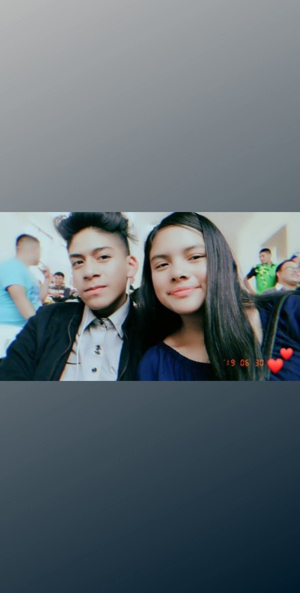

Foto de los primeros meses

LOS PRIMEROS MESES
Éramos jóvenes. Estábamos en el colegio.
Tú eras muy cariñosa y atenta conmigo. Me regalabas cosas, me consentías y eras muy linda conmigo.
Yo también intentaba hacerte sentir bien, consentirte y quererte de todas las formas que sabía.